Exercises on Classes
An Introduction to Classes and Instances by Example - The Circle Class
This first exercise shall lead you through all the basic concepts in OOP.
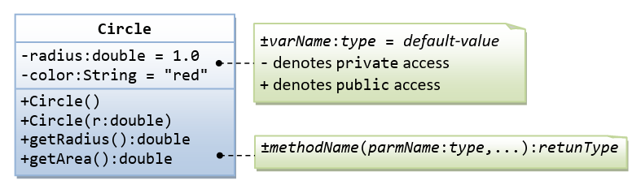A class called circle is designed as shown in the following class diagram. It contains:
- Two
privateinstance variables:radius(of the typedouble) andcolor(of the typeString), with default value of1.0and "red", respectively. - Two overloaded constructors - a default constructor with no argument, and a constructor which takes a double argument for radius.
- Two
publicmethods:getRadius()andgetArea(), which return the radius and area of this instance, respectively.
The source codes for Circle.java is as follows:
/** * The Circle class models a circle with a radius and color. */ public class Circle { // Save as "Circle.java" // private instance variable, not accessible from outside this class private double radius; private String color; // Constructors (overloaded) /** Constructs a Circle instance with default value for radius and color */ public Circle() { // 1st (default) constructor radius = 1.0; color = "red"; } /** Constructs a Circle instance with the given radius and default color */ public Circle(double r) { // 2nd constructor radius = r; color = "red"; } /** Returns the radius */ public double getRadius() { return radius; } /** Returns the area of this Circle instance */ public double getArea() { return radius*radius*Math.PI; } }
Compile "Circle.java". Can you run the Circle class? Why?
This Circle class does not have a main() method. Hence, it cannot be run directly. This Circle class is a “building block” and is meant to be used in another program.
Let us write a test program called TestCircle (in another source file called TestCircle.java) which uses the Circle class, as follows:
/** * A Test Driver for the Circle class */ public class TestCircle { // Save as "TestCircle.java" public static void main(String[] args) { // Declare an instance of Circle class called c1. // Construct the instance c1 by invoking the "default" constructor // which sets its radius and color to their default value. Circle c1 = new Circle(); // Invoke public methods on instance c1, via dot operator. System.out.println("The circle has radius of " + c1.getRadius() + " and area of " + c1.getArea()); //The circle has radius of 1.0 and area of 3.141592653589793 // Declare an instance of class circle called c2. // Construct the instance c2 by invoking the second constructor // with the given radius and default color. Circle c2 = new Circle(2.0); // Invoke public methods on instance c2, via dot operator. System.out.println("The circle has radius of " + c2.getRadius() + " and area of " + c2.getArea()); //The circle has radius of 2.0 and area of 12.566370614359172 } }
Now, run the TestCircle and study the results.
More Basic OOP Concepts
- Constructor: Modify the class
Circleto include a third constructor for constructing aCircleinstance with two arguments - adoubleforradiusand aStringforcolor.// 3rd constructor to construct a new instance of Circle with the given radius and color public Circle (double r, String c) { ...... }Modify the test programTestCircleto construct an instance ofCircleusing this constructor. - Getter: Add a getter for variable
colorfor retrieving thecolorof this instance.// Getter for instance variable color public String getColor() { ...... }Modify the test program to test this method. - public vs. private: In
TestCircle, can you access the instance variableradiusdirectly (e.g.,System.out.println(c1.radius)); or assign a new value toradius(e.g.,c1.radius=5.0)? Try it out and explain the error messages. - Setter: Is there a need to change the values of
radiusandcolorof aCircleinstance after it is constructed? If so, add twopublicmethods called setters for changing theradiusandcolorof aCircleinstance as follows:// Setter for instance variable radius public void setRadius(double newRadius) { radius = newRadius; } // Setter for instance variable color public void setColor(String newColor) { ...... }
Modify theTestCircleto test these methods, e.g.,Circle c4 = new Circle(); // construct an instance of Circle c4.setRadius(5.5); // change radius System.out.println("radius is: " + c4.getRadius()); // Print radius via getter c4.setColor("green"); // Change color System.out.println("color is: " + c4.getColor()); // Print color via getter // You cannot do the following because setRadius() returns void, which cannot be printed System.out.println(c4.setRadius(4.4));
- Keyword "this": Instead of using variable names such as
r(forradius) andc(forcolor) in the methods' arguments, it is better to use variable namesradius(forradius) andcolor(forcolor) and use the special keyword "this" to resolve the conflict between instance variables and methods' arguments. For example,// Instance variable private double radius; /** Constructs a Circle instance with the given radius and default color */ public Circle(double radius) { this.radius = radius; // "this.radius" refers to the instance variable // "radius" refers to the method's parameter color = "red"; } /** Sets the radius to the given value */ public void setRadius(double radius) { this.radius = radius; // "this.radius" refers to the instance variable // "radius" refers to the method's argument }
Modify ALL the constructors and setters in theCircleclass to use the keyword "this". - Method toString(): Every well-designed Java class should contain a
publicmethod calledtoString()that returns a description of the instance (in the return type ofString). ThetoString()method can be called explicitly (viainstanceName.toString()) just like any other method; or implicitly throughprintln(). If an instance is passed to theprintln(anInstance)method, thetoString()method of that instance will be invoked implicitly. For example, include the followingtoString()methods to theCircleclass:/** Return a self-descriptive string of this instance in the form of Circle[radius=?,color=?] */ public String toString() { return "Circle[radius=" + radius + " color=" + color + "]"; }Try callingtoString()method explicitly, just like any other method:Circle c5 = new Circle(5.5); System.out.println(c5.toString()); // explicit calltoString()is called implicitly when an instance is passed toprintln()method, for example,Circle c6 = new Circle(6.6); System.out.println(c6.toString()); // explicit call System.out.println(c6); // println() calls toString() implicitly, same as above System.out.println("Operator '+' invokes toString() too: " + c6); // '+' invokes toString() too
The final class diagram for the Circle class is as follows:
Ex: Yet Another Circle Class
A class called Circle, which models a circle with a radius, is designed as shown in the following class diagram. Write the Circle class.
Below is a Test Driver to test your Circle class.
public class TestMain {
public static void main(String[] args) {
// Test Constructors and toString()
Circle c1 = new Circle(1.1);
System.out.println(c1); // toString()
Circle c2 = new Circle(); // default constructor
System.out.println(c2);
// Test setter and getter
c1.setRadius(2.2);
System.out.println(c1); // toString()
System.out.println("radius is: " + c1.getRadius());
// Test getArea() and getCircumference()
System.out.printf("area is: %.2f%n", c1.getArea());
System.out.printf("circumference is: %.2f%n", c1.getCircumference());
}
}
The expected output is:
Circle[radius=1.1]
Circle[radius=1.0]
Circle[radius=2.2]
radius is: 2.2
area is: 15.21
circumference is: 13.82
Ex: The Rectangle Class
A class called Rectangle, which models a rectangle with a length and a width (in float), is designed as shown in the following class diagram. Write the Rectangle class.
Below is a test driver to test the Rectangle class:
public class TestMain {
public static void main(String[] args) {
// Test constructors and toString()
// You need to append a 'f' or 'F' to a float literal
Rectangle r1 = new Rectangle(1.2f, 3.4f);
System.out.println(r1); // toString()
Rectangle r2 = new Rectangle(); // default constructor
System.out.println(r2);
// Test setters and getters
r1.setLength(5.6f);
r1.setWidth(7.8f);
System.out.println(r1); // toString()
System.out.println("length is: " + r1.getLength());
System.out.println("width is: " + r1.getWidth());
// Test getArea() and getPerimeter()
System.out.printf("area is: %.2f%n", r1.getArea());
System.out.printf("perimeter is: %.2f%n", r1.getPerimeter());
}
}
The expected output is:
Rectangle[length=1.2,width=3.4]
Rectangle[length=1.0,width=1.0]
Rectangle[length=5.6,width=7.8]
length is: 5.6
width is: 7.8
area is: 43.68
perimeter is: 26.80
Ex: The Employee Class
A class called Employee, which models an employee with an ID, name and salary, is designed as shown in the following class diagram. The method raiseSalary(percent) increases the salary by the given percentage. Write the Employee class.
Below is a test driver to test the Employee class:
public class TestMain {
public static void main(String[] args) {
// Test constructor and toString()
Employee e1 = new Employee(8, "Peter", "Tan", 2500);
System.out.println(e1); // toString();
// Test Setters and Getters
e1.setSalary(999);
System.out.println(e1); // toString();
System.out.println("id is: " + e1.getId());
System.out.println("firstname is: " + e1.getFirstName());
System.out.println("lastname is: " + e1.getLastName());
System.out.println("salary is: " + e1.getSalary());
System.out.println("name is: " + e1.getName());
System.out.println("annual salary is: " + e1.getAnnualSalary()); // Test method
// Test raiseSalary()
System.out.println(e1.raiseSalary(10));
System.out.println(e1);
}
}
The expected out is:
Employee[id=8,name=Peter Tan,salary=2500]
Employee[id=8,name=Peter Tan,salary=999]
id is: 8
firstname is: Peter
lastname is: Tan
salary is: 999
name is: Peter Tan
annual salary is: 11988
1098
Employee[id=8,name=Peter Tan,salary=1098]
Ex: The InvoiceItem Class
A class called InvoiceItem, which models an item of an invoice, with ID, description, quantity and unit price, is designed as shown in the following class diagram. Write the InvoiceItem class.
Below is a test driver to test the InvoiceItem class:
public class TestMain {
public static void main(String[] args) {
// Test constructor and toString()
InvoiceItem inv1 = new InvoiceItem("A101", "Pen Red", 888, 0.08);
System.out.println(inv1); // toString();
// Test Setters and Getters
inv1.setQty(999);
inv1.setUnitPrice(0.99);
System.out.println(inv1); // toString();
System.out.println("id is: " + inv1.getId());
System.out.println("desc is: " + inv1.getDesc());
System.out.println("qty is: " + inv1.getQty());
System.out.println("unitPrice is: " + inv1.getUnitPrice());
// Test getTotal()
System.out.println("The total is: " + inv1.getTotal());
}
}
The expected output is:
InvoiceItem[id=A101,desc=Pen Red,qty=888,unitPrice=0.08]
InvoiceItem[id=A101,desc=Pen Red,qty=999,unitPrice=0.99]
id is: A101
desc is: Pen Red
qty is: 999
unitPrice is: 0.99
The total is: 989.01
Ex: The Account Class
A class called Account, which models a bank account of a customer, is designed as shown in the following class diagram. The methods credit(amount) and debit(amount) add or subtract the given amount to the balance. The method transferTo(anotherAccount, amount) transfers the given amount from this Account to the given anotherAccount. Write the Account class.
Below is a test driver to test the Account class:
public class TestMain {
public static void main(String[] args) {
// Test constructor and toString()
Account a1 = new Account("A101", "Tan Ah Teck", 88);
System.out.println(a1); // toString();
Account a2 = new Account("A102", "Kumar"); // default balance
System.out.println(a2);
// Test Getters
System.out.println("ID: " + a1.getID());
System.out.println("Name: " + a1.getName());
System.out.println("Balance: " + a1.getBalance());
// Test credit() and debit()
a1.credit(100);
System.out.println(a1);
a1.debit(50);
System.out.println(a1);
a1.debit(500); // debit() error
System.out.println(a1);
// Test transfer()
a1.transferTo(a2, 100); // toString()
System.out.println(a1);
System.out.println(a2);
}
}
The expected output is:
Account[id=A101,name=Tan Ah Teck,balance=88]
Account[id=A102,name=Kumar,balance=0]
ID: A101
Name: Tan Ah Teck
Balance: 88
Account[id=A101,name=Tan Ah Teck,balance=188]
Account[id=A101,name=Tan Ah Teck,balance=138]
Amount exceeded balance
Account[id=A101,name=Tan Ah Teck,balance=138]
Account[id=A101,name=Tan Ah Teck,balance=38]
Account[id=A102,name=Kumar,balance=100]
Ex: The Date Class
A class called Date, which models a calendar date, is designed as shown in the following class diagram. Write the Date class.
Below is a test driver to test the Date class:
public class TestMain {
public static void main(String[] args) {
// Test constructor and toString()
Date d1 = new Date(1, 2, 2014);
System.out.println(d1); // toString()
// Test Setters and Getters
d1.setMonth(12);
d1.setDay(9);
d1.setYear(2099);
System.out.println(d1); // toString()
System.out.println("Month: " + d1.getMonth());
System.out.println("Day: " + d1.getDay());
System.out.println("Year: " + d1.getYear());
// Test setDate()
d1.setDate(3, 4, 2016);
System.out.println(d1); // toString()
}
}
The expected output is:
01/02/2014
09/12/2099
Month: 12
Day: 9
Year: 2099
03/04/2016
Ex: The Time Class
A class called Time, which models a time instance, is designed as shown in the following class diagram. The methods nextSecond() and previousSecond() shall advance or rewind this instance by one second, and return this instance, so as to support chaining operation such as t1.nextSecond().nextSecond(). Write the Time class.
Below is a test driver for testing the Time class:
public class TestMain {
public static void main(String[] args) {
// Test constructors and toString()
Time t1 = new Time(1, 2, 3);
System.out.println(t1); // toString()
// Test Setters and Getters
t1.setHour(4);
t1.setMinute(5);
t1.setSecond(6);
System.out.println(t1); // toString()
System.out.println("Hour: " + t1.getHour());
System.out.println("Minute: " + t1.getMinute());
System.out.println("Second: " + t1.getSecond());
// Test setTime()
t1.setTime(23, 59, 58);
System.out.println(t1); // toString()
// Test nextSecond();
System.out.println(t1.nextSecond());
System.out.println(t1.nextSecond().nextSecond());
// Test previousSecond()
System.out.println(t1.previousSecond());
System.out.println(t1.previousSecond().previousSecond());
}
}
The expected output is:
01:02:03
04:05:06
Hour: 4
Minute: 5
Second: 6
23:59:58
23:59:59
00:00:01
00:00:00
23:59:58
Ex: The Ball Class
A class called Ball, which models a bouncing ball, is designed as shown in the following class diagram. It contains its radius, x and y position. Each move-step advances the x and y by delta-x and delta-y, respectively. delta-x and delta-y could be positive or negative. The reflectHorizontal() and reflectVertical() methods could be used to bounce the ball off the walls. Write the Ball class. Study the test driver on how the ball bounces.
Below is a test driver:
public class TestMain {
public static void main(String[] args) {
// Test constructor and toString()
Ball ball = new Ball(1.1f, 2.2f, 10, 3.3f, 4.4f);
System.out.println(ball); // toString()
// Test Setters and Getters
ball.setX(80.0f);
ball.setY(35.0f);
ball.setRadius(5);
ball.setXDelta(4.0f);
ball.setYDelta(6.0f);
System.out.println(ball); // toString()
System.out.println("x is: " + ball.getX());
System.out.println("y is: " + ball.getY());
System.out.println("radius is: " + ball.getRadius());
System.out.println("xDelta is: " + ball.getXDelta());
System.out.println("yDelta is: " + ball.getYDelta());
// Bounce the ball within the boundary
float xMin = 0.0f;
float xMax = 100.0f;
float yMin = 0.0f;
float yMax = 50.0f;
for (int i = 0; i < 15; i++) {
ball.move();
System.out.println(ball);
float xNew = ball.getX();
float yNew = ball.getY();
int radius = ball.getRadius();
// Check boundary value to bounce back
if ((xNew + radius) > xMax || (xNew - radius) < xMin) {
ball.reflectHorizontal();
}
if ((yNew + radius) > yMax || (yNew - radius) < yMin) {
ball.reflectVertical();
}
}
}
}
The expected output is:
Ball[(1.1,2.2),speed=(3.3,4.4)]
Ball[(80.0,35.0),speed=(4.0,6.0)]
x is: 80.0
y is: 35.0
radius is: 5
xDelta is: 4.0
yDelta is: 6.0
Ball[(84.0,41.0),speed=(4.0,6.0)]
Ball[(88.0,47.0),speed=(4.0,6.0)]
Ball[(92.0,41.0),speed=(4.0,-6.0)]
Ball[(96.0,35.0),speed=(4.0,-6.0)]
Ball[(92.0,29.0),speed=(-4.0,-6.0)]
Ball[(88.0,23.0),speed=(-4.0,-6.0)]
Ball[(84.0,17.0),speed=(-4.0,-6.0)]
Ball[(80.0,11.0),speed=(-4.0,-6.0)]
Ball[(76.0,5.0),speed=(-4.0,-6.0)]
Ball[(72.0,-1.0),speed=(-4.0,-6.0)]
Ball[(68.0,5.0),speed=(-4.0,6.0)]
Ball[(64.0,11.0),speed=(-4.0,6.0)]
Ball[(60.0,17.0),speed=(-4.0,6.0)]
Ball[(56.0,23.0),speed=(-4.0,6.0)]
Ball[(52.0,29.0),speed=(-4.0,6.0)]
Try: Modify the constructor to take in speed and direction (in polar coordinates) instead of delta-x and delta-y (in cartesian coordinates), which is more convenient for the users.
public Ball(float x, float y, int radius, int speed, int directionInDegree)
Exercises on Composition
An Introduction to OOP Composition by Example - the Author and Book Classes
This first exercise shall lead you through all the concepts involved in OOP Composition.

A class called Author (as shown in the class diagram) is designed to model a book's author. It contains:
- Three
privateinstance variables:name(String),email(String), andgender(charof either'm'or'f'); - One constructor to initialize the
name,emailandgenderwith the given values;public Author (String name, String email, char gender) {......}(There is no default constructor for Author, as there are no defaults for name, email and gender.) publicgetters/setters:getName(),getEmail(),setEmail(), andgetGender();
(There are no setters fornameandgender, as these attributes cannot be changed.)- A
toString()method that returns "Author[name=?,email=?,gender=?]", e.g., "Author[name=Tan Ah Teck,email=ahTeck@somewhere.com,gender=m]".
Write the Author class. Also write a test driver called TestAuthor to test all the public methods, e.g.,
Author ahTeck = new Author("Tan Ah Teck", "ahteck@nowhere.com", 'm'); // Test the constructor
System.out.println(ahTeck); // Test toString()
ahTeck.setEmail("paulTan@nowhere.com"); // Test setter
System.out.println("name is: " + ahTeck.getName()); // Test getter
System.out.println("email is: " + ahTeck.getEmail()); // Test getter
System.out.println("gender is: " + ahTeck.getGender()); // Test getter

A class called Book is designed (as shown in the class diagram) to model a book written by one author. It contains:
- Four
privateinstance variables:name(String),author(of the classAuthoryou have just created, assume that a book has one and only one author),price(double), andqty(int); - Two constructors:
public Book (String name, Author author, double price) { ...... } public Book (String name, Author author, double price, int qty) { ...... } - public methods
getName(),getAuthor(),getPrice(),setPrice(),getQty(),setQty(). - A
toString()that returns "Book[name=?,Author[name=?,email=?,gender=?],price=?,qty=?". You should reuseAuthor’stoString().
Write the Book class (which uses the Author class written earlier). Also write a test driver called TestBook to test all the public methods in the class Book. Take Note that you have to construct an instance of Author before you can construct an instance of Book. E.g.,
// Construct an author instance Author ahTeck = new Author("Tan Ah Teck", "ahteck@nowhere.com", 'm'); System.out.println(ahTeck); // Author's toString() Book dummyBook = new Book("Java for dummy", ahTeck, 19.95, 99); // Test Book's Constructor System.out.println(dummyBook); // Test Book's toString() // Test Getters and Setters dummyBook.setPrice(29.95); dummyBook.setQty(28); System.out.println("name is: " + dummyBook.getName()); System.out.println("price is: " + dummyBook.getPrice()); System.out.println("qty is: " + dummyBook.getQty()); System.out.println("Author is: " + dummyBook.getAuthor()); // Author's toString() System.out.println("Author's name is: " + dummyBook.getAuthor().getName()); System.out.println("Author's email is: " + dummyBook.getAuthor().getEmail()); // Use an anonymous instance of Author to construct a Book instance Book anotherBook = new Book("more Java", new Author("Paul Tan", "paul@somewhere.com", 'm'), 29.95); System.out.println(anotherBook); // toString()
Take note that both Book and Author classes have a variable called name. However, it can be differentiated via the referencing instance. For a Book instance says aBook, aBook.name refers to the name of the book; whereas for an Author's instance say auAuthor, anAuthor.name refers to the name of the author. There is no need (and not recommended) to call the variables bookName and authorName.
TRY:
- Printing the
nameandemailof the author from aBookinstance. (Hint:aBook.getAuthor().getName(),aBook.getAuthor().getEmail()). - Introduce new methods called
getAuthorName(),getAuthorEmail(),getAuthorGender()in theBookclass to return thename,emailandgenderof the author of the book. For example,public String getAuthorName() { return author.getName(); // cannot use author.name as name is private in Author class }
(Advanced) The Author and Book Classes Again - An Array of Objects as an Instance Variable
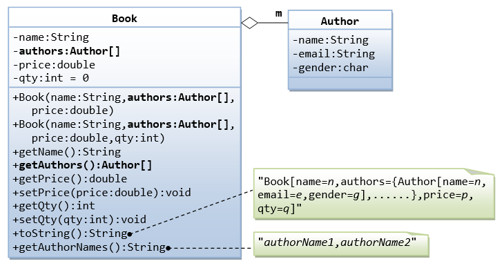In the earlier exercise, a book is written by one and only one author. In reality, a book can be written by one or more author. Modify the Book class to support one or more authors by changing the instance variable authors to an Author array.
Notes:
- The constructors take an array of
Author(i.e.,Author[]), instead of anAuthorinstance. In this design, once aBookinstance is constructor, you cannot add or remove author. - The
toString()method shall return "Book[name=?,authors={Author[name=?,email=?,gender=?],......},price=?,qty=?]".
You are required to:
- Write the code for the
Bookclass. You shall re-use theAuthorclass written earlier. - Write a test driver (called
TestBook) to test theBookclass.
Hints:
// Declare and allocate an array of Authors Author[] authors = new Author[2]; authors[0] = new Author("Tan Ah Teck", "AhTeck@somewhere.com", 'm'); authors[1] = new Author("Paul Tan", "Paul@nowhere.com", 'm'); // Declare and allocate a Book instance Book javaDummy = new Book("Java for Dummy", authors, 19.99, 99); System.out.println(javaDummy); // toString()
Ex: The Author and Book Classes - Your Turn
A class called Author, which models an author of a book, is designed as shown in the class diagram. A class called Book, which models a book written by ONE author and composes an instance of Author as its instance variable, is also shown. Write the Author and Book classes.
Below is a test driver:
public class TestMain {
public static void main(String[] args) {
// Test Author class
Author a1 = new Author("Tan Ah Teck", "ahteck@nowhere.com");
System.out.println(a1);
a1.setEmail("ahteck@somewhere.com");
System.out.println(a1);
System.out.println("name is: " + a1.getName());
System.out.println("email is: " + a1.getEmail());
// Test Book class
Book b1 = new Book("12345", "Java for dummies", a1, 8.8, 88);
System.out.println(b1);
b1.setPrice(9.9);
b1.setQty(99);
System.out.println(b1);
System.out.println("isbn is: " + b1.getIsbn());
System.out.println("name is: " + b1.getName());
System.out.println("price is: " + b1.getPrice());
System.out.println("qty is: " + b1.getQty());
System.out.println("author is: " + b1.getAuthor()); // Author's toString()
System.out.println("author's name: " + b1.getAuthorName());
System.out.println("author's name: " + b1.getAuthor().getName());
System.out.println("author's email: " + b1.getAuthor().getEmail());
}
}
The expected output is:
Author[name=Tan Ah Teck,email=ahteck@nowhere.com] Author[name=Tan Ah Teck,email=ahteck@somewhere.com] name is: Tan Ah Teck email is: ahteck@somewhere.com Book[isbn=12345,name=Java for dummies,Author[name=Tan Ah Teck,email=ahteck@somewhere.com],price=8.8,qty=88] Book[isbn=12345,name=Java for dummies,Author[name=Tan Ah Teck,email=ahteck@somewhere.com],price=9.9,qty=99] isbn is: Java for dummies name is: Java for dummies price is: 9.9 qty is: 99 author is: Author[name=Tan Ah Teck,email=ahteck@somewhere.com] author's name: Tan Ah Teck author's name: Tan Ah Teck author's email: ahteck@somewhere.com
Ex: The Customer and Invoice classes
A class called Customer, which models a customer in a transaction, is designed as shown in the class diagram. A class called Invoice, which models an invoice for a particular customer and composes an instance of Customer as its instance variable, is also shown. Write the Customer and Invoice classes.
Below is a test driver:
public class TestMain {
public static void main(String[] args) {
// Test Customer class
Customer c1 = new Customer(88, "Tan Ah Teck", 10);
System.out.println(c1); // Customer's toString()
c1.setDiscount(8);
System.out.println(c1);
System.out.println("id is: " + c1.getId());
System.out.println("name is: " + c1.getName());
System.out.println("discount is: " + c1.getDiscount());
// Test Invoice class
Invoice inv1 = new Invoice(101, c1, 888.8);
System.out.println(inv1);
inv1.setAmount(999.9);
System.out.println(inv1);
System.out.println("id is: " + inv1.getId());
System.out.println("customer is: " + inv1.getCustomer()); // Customer's toString()
System.out.println("amount is: " + inv1.getAmount());
System.out.println("customer's id is: " + inv1.getCustomerId());
System.out.println("customer's name is: " + inv1.getCustomerName());
System.out.println("customer's discount is: " + inv1.getCustomerDiscount());
System.out.printf("amount after discount is: %.2f%n", inv1.getAmountAfterDiscount());
}
}
The expected output is:
Tan Ah Teck(88)(10%)
Tan Ah Teck(88)(8%)
id is: 88
name is: Tan Ah Teck
discount is: 8
Invoice[id=101,customer=Tan Ah Teck(88)(8%),amount=888.8]
Invoice[id=101,customer=Tan Ah Teck(88)(8%),amount=999.9]
id is: 101
customer is: Tan Ah Teck(88)(8%)
amount is: 999.9
customer's id is: 88
customer's name is: Tan Ah Teck
customer's discount is: 8
amount after discount is: 919.91
Ex: The Customer and Account classes
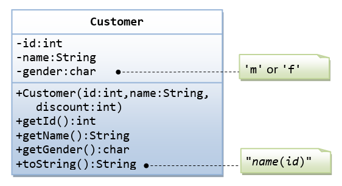The Customer class models a customer is design as shown in the class diagram. Write the codes for the Customer class and a test driver to test all the public methods.
The Account class models a bank account, design as shown in the class diagram, composes a Customer instance (written earlier) as its member. Write the codes for the Account class and a test driver to test all the public methods.
Ex: The MyPoint Class
A class called MyPoint, which models a 2D point with x and y coordinates, is designed as shown in the class diagram.
It contains:
- Two instance variables
x(int) andy(int). - A default (or "no-argument" or "no-arg") constructor that construct a point at the default location of
(0, 0). - A overloaded constructor that constructs a point with the given
xandycoordinates. - Getter and setter for the instance variables
xandy. - A method
setXY()to set bothxandy. - A method
getXY()which returns the x and y in a 2-elementintarray. - A
toString()method that returns a string description of the instance in the format "(x, y)". - A method called
distance(int x, int y)that returns the distance from this point to another point at the given(x, y)coordinates, e.g.,MyPoint p1 = new MyPoint(3, 4); System.out.println(p1.distance(5, 6));
- An overloaded
distance(MyPoint another)that returns the distance from this point to the givenMyPointinstance (calledanother), e.g.,MyPoint p1 = new MyPoint(3, 4); MyPoint p2 = new MyPoint(5, 6); System.out.println(p1.distance(p2));
- Another overloaded
distance()method that returns the distance fromthispoint to the origin(0,0), e.g.,MyPoint p1 = new MyPoint(3, 4); System.out.println(p1.distance());
You are required to:
- Write the code for the class
MyPoint. Also write a test program (calledTestMyPoint) to test all the methods defined in the class.
Hints:// Overloading method distance() // This version takes two ints as arguments public double distance(int x, int y) { int xDiff = this.x – x; int yDiff = ...... return Math.sqrt(xDiff*xDiff + yDiff*yDiff); } // This version takes a MyPoint instance as argument public double distance(MyPoint another) { int xDiff = this.x – another.x; ....... }
// Test program to test all constructors and public methods MyPoint p1 = new MyPoint(); // Test constructor System.out.println(p1); // Test toString() p1.setX(8); // Test setters p1.setY(6); System.out.println("x is: " + p1.getX()); // Test getters System.out.println("y is: " + p1.getY()); p1.setXY(3, 0); // Test setXY() System.out.println(p1.getXY()[0]); // Test getXY() System.out.println(p1.getXY()[1]); System.out.println(p1); MyPoint p2 = new MyPoint(0, 4); // Test another constructor System.out.println(p2); // Testing the overloaded methods distance() System.out.println(p1.distance(p2)); // which version? System.out.println(p2.distance(p1)); // which version? System.out.println(p1.distance(5, 6)); // which version? System.out.println(p1.distance()); // which version?
- Write a program that allocates
10points in an array ofMyPoint, and initializes to(1, 1),(2, 2), ...(10, 10).
Hints: You need to allocate the array, as well as each of the 10MyPointinstances. In other words, you need to issue 11new, 1 for the array and 10 for theMyPointinstances.MyPoint[] points = new MyPoint[10]; // Declare and allocate an array of MyPoint for (int i = 0; i < points.length; i++) { points[i] = new MyPoint(...); // Allocate each of MyPoint instances } // use a loop to print all the points
Notes: Point is such a common entity that JDK certainly provided for in all flavors.
Ex: The MyLine and MyPoint Classes
A class called MyLine, which models a line with a begin point at (x1, y1) and an end point at (x2, y2), is designed as shown in the class diagram. The MyLine class uses two MyPoint instances (written in the earlier exercise) as its begin and end points. Write the MyLine class. Also write a test driver to test all the public methods in the MyLine class.
Ex: The MyCircle and MyPoint Classes
A class called MyCircle, which models a circle with a center and a radius, is designed as shown in the class diagram. The MyCircle class uses a MyPoint instance (written in the earlier exercise) as its center.
The class contains:
- Two
privateinstance variables:center(an instance ofMyPoint) andradius(int). - A constructor that constructs a circle with the given center's (
x,y) andradius. - An overloaded constructor that constructs a
MyCirclegiven aMyPointinstance ascenter, andradius. - A default constructor that construct a circle with center at
(0,0)and radius of1. - Various getters and setters.
- A
toString()method that returns a string description of this instance in the format "MyCircle[radius=r,center=(x,y)]". You shall reuse thetoString()ofMyPoint. getArea()andgetCircumference()methods that return the area and circumference ofthiscircle indouble.- A
distance(MyCircle another)method that returns the distance of the centers fromthisinstance and the givenMyCircleinstance. You should useMyPoint’sdistance()method to compute this distance.
Write the MyCircle class. Also write a test driver (called TestMyCircle) to test all the public methods defined in the class.
Hints:
// Constructors public MyCircle(int x, int y, int radius) { // Need to construct an instance of MyPoint for the variable center center = new MyPoint(x, y); this.radius = radius; } public MyCircle(MyPoint center, int radius) { // An instance of MyPoint already constructed by caller; simply assign. this.center = center; ...... } public MyCircle() { center = new MyPoint(.....); // construct MyPoint instance this.radius = ...... } // Returns the x-coordinate of the center of this MyCircle public int getCenterX() { return center.getX(); // cannot use center.x and x is private in MyPoint } // Returns the distance of the center for this MyCircle and another MyCircle public double distance(MyCircle another) { return center.distance(another.center); // use distance() of MyPoint }
Ex: The MyTriangle and MyPoint Classes
A class called MyTriangle, which models a triangle with 3 vertices, is designed as shown in the class diagram. The MyTriangle class uses three MyPoint instances (created in the earlier exercise) as the three vertices.
It contains:
- Three
privateinstance variablesv1,v2,v3(instances ofMyPoint), for the three vertices. - A constructor that constructs a
MyTrianglewith three set of coordinates,v1=(x1, y1),v2=(x2, y2),v3=(x3, y3). - An overloaded constructor that constructs a
MyTrianglegiven three instances ofMyPoint. - A
toString()method that returns a string description of the instance in the format "MyTriangle[v1=(x1,y1),v2=(x2,y2),v3=(x3,y3)]". - A
getPerimeter()method that returns the length of the perimeter in double. You should use thedistance()method ofMyPointto compute the perimeter. - A method
printType(), which prints "equilateral" if all the three sides are equal, "isosceles" if any two of the three sides are equal, or "scalene" if the three sides are different.
Write the MyTriangle class. Also write a test driver (called TestMyTriangle) to test all the public methods defined in the class.
Ex: The MyRectangle and MyPoint Classes
Design a MyRectangle class which is composed of two MyPoint instances as its top-left and bottom-right corners. Draw the class diagrams, write the codes, and write the test drivers.
More Exercises on Classes
Ex: The MyComplex class
A class called MyComplex, which models a complex number with real and imaginary parts, is designed as shown in the class diagram.
It contains:
- Two instance variable named
real(double) andimag(double) which stores the real and imaginary parts of the complex number, respectively. - A constructor that creates a
MyComplexinstance with the given real and imaginary values. - A default constructor that create a MyComplex at
0.0 + 0.0i. - Getters and setters for instance variables
realandimag. - A method
setValue()to set the value of the complex number. - A
toString()that returns "(x + yi)" wherexandyare the real and imaginary parts, respectively. - Methods
isReal()andisImaginary()that returnstrueif this complex number is real or imaginary, respectively.
Hints:return (imag == 0);
- A method
equals(double real, double imag)that returnstrueifthiscomplex number is equal to the given complex number (real, imag).
Hints:return (this.real == real && this.imag == imag);
- An overloaded
equals(MyComplex another)that returnstrueif this complex number is equal to the givenMyComplexinstanceanother.
Hints:return (this.real == another.real && this.imag == another.imag);
- A method
magnitude()that returns the magnitude of this complex number.magnitude(x+yi) = Math.sqrt(x*x + y*y)
- Methods
addInto(MyComplex right)that adds and subtract the givenMyComplexinstance (calledright) intothisinstance and returnsthisinstance.(a + bi) + (c + di) = (a+c) + (b+d)i
Hints:return this; // return "this" instance - Methods
addNew(MyComplex right)that addsthisinstance with the givenMyComplexinstance calledright, and returns a newMyComplexinstance containing the result.
Hint:// construct a new instance and return the constructed instance return new MyComplex(..., ...);
You are required to:
- Write the
MyComplexclass. - Write a test driver to test all the
publicmethods defined in the class. - Write an application called
MyComplexAppthat uses theMyComplexclass. The application shall prompt the user for two complex numbers, print their values, check for real, imaginary and equality, and carry out all the arithmetic operations.Enter complex number 1 (real and imaginary part): 1.1 2.2 Enter complex number 2 (real and imaginary part): 3.3 4.4 Number 1 is: (1.1 + 2.2i) (1.1 + 2.2i) is NOT a pure real number (1.1 + 2.2i) is NOT a pure imaginary number Number 2 is: (3.3 + 4.4i) (3.3 + 4.4i) is NOT a pure real number (3.3 + 4.4i) is NOT a pure imaginary number (1.1 + 2.2i) is NOT equal to (3.3 + 4.4i) (1.1 + 2.2i) + (3.3 + 4.4i) = (4.4 + 6.6000000000000005i)
Try: A (more) complete design of MyComplex class is shown below:

- Methods
argument()that returns the argument of this complex number in radians (double).arg(x+yi) = Math.atan2(y, x) (in radians)
Note: TheMathlibrary has two arc-tangent methods,Math.atan(double)andMath.atan2(double, double). We commonly use theMath.atan2(y, x)instead ofMath.atan(y/x)to avoid division by zero. Read the documentation ofMathclass in packagejava.lang. - The method
addInto()is renamedadd(). Also addedsubtract()andsubtractNew(). - Methods
multiply(MyComplex right)anddivide(MyComplex right)that multiplies and dividesthisinstance with the givenMyComplexinstanceright, and keeps the result inthisinstance, and returns this instance.(a + bi) * (c + di) = (ac - bd) + (ad + bc)i (a + bi) / (c + di) = [(a + bi) * (c – di)] / (c*c + d*d)
- A method
conjugate()that operates onthisinstance and returnsthisinstance containing the complex conjugate.conjugate(x+yi) = x - yi
Take note that there are a few flaws in the design of this class, which was introduced solely for teaching purpose:
- Comparing
doubles inequal()using "==" may produce unexpected outcome. For example,(2.2+4.4)==6.6returnsfalse. It is common to define a small threshold calledEPSILON(set to about10^-8) for comparing floating point numbers. - The method
addNew(),subtractNew()produce new instances, whereasadd(),subtract(),multiply(),divide()andconjugate()modifythisinstance. There is inconsistency in the design (introduced for teaching purpose).
Also take note that methods such as add() returns an instance of MyComplex. Hence, you can place the result inside a System.out.println() (which implicitly invoke the toString()). You can also chain the operations, e.g., c1.add(c2).add(c3) (same as (c1.add(c2)).add(c3)), or c1.add(c2).subtract(c3).
Ex: The MyPolynomial Class
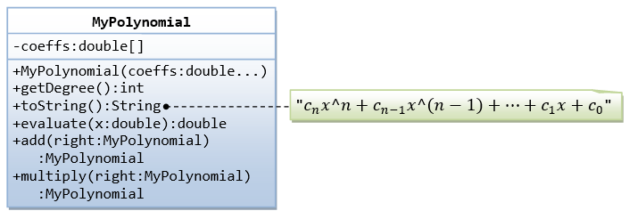A class called MyPolynomial, which models polynomials of degree-n (see equation), is designed as shown in the class diagram.
It contains:
- An instance variable named
coeffs, which stores the coefficients of the n-degree polynomial in adoublearray of sizen+1, where c0 is kept at index 0. - A constructor
MyPolynomial(coeffs:double...)that takes a variable number of doubles to initialize the coeffs array, where the first argument corresponds to c0.
The three dots is known as varargs (variable number of arguments), which is a new feature introduced in JDK 1.5. It accepts an array or a sequence of comma-separated arguments. The compiler automatically packs the comma-separated arguments in an array. The three dots can only be used for the last argument of the method.
Hints:public class MyPolynomial { private double[] coeffs; public MyPolynomial(double... coeffs) { // varargs this.coeffs = coeffs; // varargs is treated as array } ...... } // Test program // Can invoke with a variable number of arguments MyPolynomial p1 = new MyPolynomial(1.1, 2.2, 3.3); MyPolynomial p1 = new MyPolynomial(1.1, 2.2, 3.3, 4.4, 5.5); // Can also invoke with an array Double coeffs = {1.2, 3.4, 5.6, 7.8} MyPolynomial p2 = new MyPolynomial(coeffs); - A method
getDegree()that returns the degree of this polynomial. - A method
toString()that returns "cnx^n+cn-1x^(n-1)+...+c1x+c0". - A method
evaluate(double x)that evaluate the polynomial for the givenx, by substituting the givenxinto the polynomial expression. - Methods
add()andmultiply()that adds and multiplies this polynomial with the givenMyPolynomialinstanceanother, and returnsthisinstance that contains the result.
Write the MyPolynomial class. Also write a test driver (called TestMyPolynomial) to test all the public methods defined in the class.
Question: Do you need to keep the degree of the polynomial as an instance variable in the MyPolynomial class in Java? How about C/C++? Why?
Ex: Using JDK's BigInteger Class
Recall that primitive integer type byte, short, int and long represent 8-, 16-, 32-, and 64-bit signed integers, respectively. You cannot use them for integers bigger than 64 bits. Java API provides a class called BigInteger in a package called java.math. Study the API of the BigInteger class (Java API ⇒ From "Packages", choose "java.math" " From "classes", choose "BigInteger" " Study the constructors (choose "CONSTR") on how to construct a BigInteger instance, and the public methods available (choose "METHOD"). Look for methods for adding and multiplying two BigIntegers.
Write a program called TestBigInteger that:
- adds "11111111111111111111111111111111111111111111111111111111111111" to "22222222222222222222222222222222222222222222222222" and prints the result.
- multiplies the above two number and prints the result.
Hints:
import java.math.BigInteger
public class TestBigInteger {
public static void main(String[] args) {
BigInteger i1 = new BigInteger(...);
BigInteger i2 = new BigInteger(...);
System.out.println(i1.add(i2));
.......
}
}
Ex: The MyTime Class
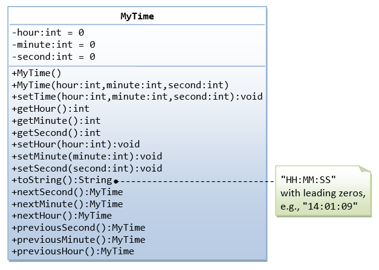A class called MyTime, which models a time instance, is designed as shown in the class diagram.
It contains the following private instance variables:
hour: between 0 to 23.minute: between 0 to 59.Second: between 0 to 59.
You are required to perform input validation.
It contains the following public methods:
setTime(int hour, int minute, int second): It shall check if the givenhour,minuteandsecondare valid before setting the instance variables.
(Advanced: Otherwise, it shall throw anIllegalArgumentExceptionwith the message "Invalid hour, minute, or second!".)- Setters
setHour(int hour),setMinute(int minute),setSecond(int second): It shall check if the parameters are valid, similar to the above. - Getters
getHour(),getMinute(),getSecond(). toString(): returns "HH:MM:SS".nextSecond(): Update this instance to the next second and return this instance. Take note that thenextSecond()of23:59:59is00:00:00.nextMinute(),nextHour(),previousSecond(),previousMinute(),previousHour(): similar to the above.
Write the code for the MyTime class. Also write a test driver (called TestMyTime) to test all the public methods defined in the MyTime class.
Ex: The MyDate Class
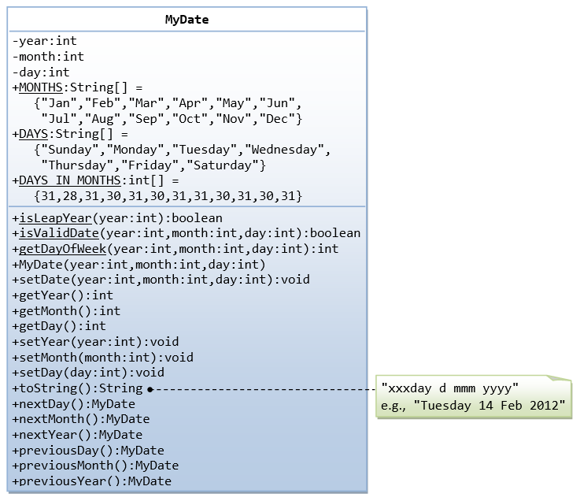A class called MyDate, which models a date instance, is defined as shown in the class diagram.
The MyDate class contains the following private instance variables:
year(int): Between1to9999.month(int): Between1(Jan) to12(Dec).day(int): Between1to28|29|30|31, where the last day depends on the month and whether it is a leap year for Feb (28|29).
It also contains the following public static final variables (drawn with underlined in the class diagram):
MONTHS(String[]),DAYS(String[]), and DAY_IN_MONTHS(int[]):staticvariables, initialized as shown, which are used in the methods.
The MyDate class has the following public static methods (drawn with underlined in the class diagram):
isLeapYear(int year): returnstrueif the givenyearis a leap year. A year is a leap year if it is divisible by 4 but not by 100, or it is divisible by 400.isValidDate(int year, int month, int day): returnstrueif the givenyear,month, anddayconstitute a valid date. Assume thatyearis between1and9999,monthis between1(Jan) to12(Dec) anddayshall be between1and28|29|30|31depending on themonthand whether it is a leap year on Feb.getDayOfWeek(int year, int month, int day): returns the day of the week, where0for Sun,1for Mon, ...,6for Sat, for the given date. Assume that the date is valid. Read the earlier exercise on how to determine the day of the week (or Wiki "Determination of the day of the week").
The MyDate class has one constructor, which takes 3 parameters: year, month and day. It shall invoke setDate() method (to be described later) to set the instance variables.
The MyDate class has the following public methods:
setDate(int year, int month, int day): It shall invoke thestaticmethodisValidDate()to verify that the givenyear,monthanddayconstitute a valid date.
(Advanced: Otherwise, it shall throw anIllegalArgumentExceptionwith the message "Invalid year, month, or day!".)setYear(int year): It shall verify that the givenyearis between1and9999.
(Advanced: Otherwise, it shall throw anIllegalArgumentExceptionwith the message "Invalid year!".)setMonth(int month): It shall verify that the givenmonthis between1and12.
(Advanced: Otherwise, it shall throw anIllegalArgumentExceptionwith the message "Invalid month!".)setDay(int day): It shall verify that the givendayis between1anddayMax, wheredayMaxdepends on themonthand whether it is a leap year for Feb.
(Advanced: Otherwise, it shall throw anIllegalArgumentExceptionwith the message "Invalid month!".)getYear(),getMonth(),getDay(): return the value for theyear,monthandday, respectively.toString(): returns a date string in the format "xxxday d mmm yyyy", e.g., "Tuesday 14 Feb 2012".nextDay(): updatethisinstance to the next day and returnthisinstance. Take note thatnextDay()for31 Dec 2000shall be1 Jan 2001.nextMonth(): updatethisinstance to the next month and returnthisinstance. Take note thatnextMonth()for31 Oct 2012shall be30 Nov 2012.nextYear(): updatethisinstance to the next year and returnthisinstance. Take note thatnextYear()for29 Feb 2012shall be28 Feb 2013.
(Advanced: throw anIllegalStateExceptionwith the message "Year out of range!" if year > 9999.)previousDay(),previousMonth(),previousYear(): similar to the above.
Write the code for the MyDate class.
Use the following test statements to test the MyDate class:
MyDate d1 = new MyDate(2012, 2, 28); System.out.println(d1); // Tuesday 28 Feb 2012 System.out.println(d1.nextDay()); // Wednesday 29 Feb 2012 System.out.println(d1.nextDay()); // Thursday 1 Mar 2012 System.out.println(d1.nextMonth()); // Sunday 1 Apr 2012 System.out.println(d1.nextYear()); // Monday 1 Apr 2013 MyDate d2 = new MyDate(2012, 1, 2); System.out.println(d2); // Monday 2 Jan 2012 System.out.println(d2.previousDay()); // Sunday 1 Jan 2012 System.out.println(d2.previousDay()); // Saturday 31 Dec 2011 System.out.println(d2.previousMonth()); // Wednesday 30 Nov 2011 System.out.println(d2.previousYear()); // Tuesday 30 Nov 2010 MyDate d3 = new MyDate(2012, 2, 29); System.out.println(d3.previousYear()); // Monday 28 Feb 2011 // MyDate d4 = new MyDate(2099, 11, 31); // Invalid year, month, or day! // MyDate d5 = new MyDate(2011, 2, 29); // Invalid year, month, or day!
Write a test program that tests the nextDay() in a loop, by printing the dates from 28 Dec 2011 to 2 Mar 2012.
Ex: Bouncing Balls - Ball and Container Classes
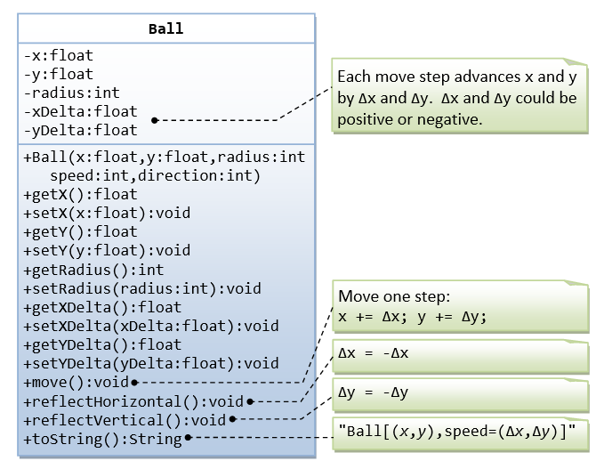A class called Ball is designed as shown in the class diagram.
The Ball class contains the following private instance variables:
x,yandradius, which represent the ball's center(x, y)co-ordinates and the radius, respectively.xDelta(Δx) andyDelta(Δy), which represent the displacement (movement) per step, in thexandydirection respectively.
The Ball class contains the following public methods:
- A constructor which accepts
x,y,radius,speed, anddirectionas arguments. For user friendliness, user specifiesspeed(in pixels per step) anddirection(in degrees in the range of(-180°, 180°]). For the internal operations, thespeedanddirectionare to be converted to(Δx, Δy)in the internal representation. Note that the y-axis of the Java graphics coordinate system is inverted, i.e., the origin(0, 0)is located at the top-left corner.
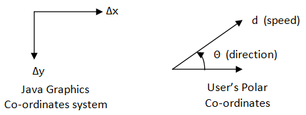Δx = d × cos(θ) Δy = -d × sin(θ)
- Getter and setter for all the instance variables.
- A method
move()which move the ball by one step.x += Δx y += Δy
reflectHorizontal()which reflects the ball horizontally (i.e., hitting a vertical wall)Δx = -Δx Δy no changes
reflectVertical()(the ball hits a horizontal wall).Δx no changes Δy = -Δy
toString()which prints the message "Ball at (x, y) of velocity (Δx, Δy)".
Write the Ball class. Also write a test program to test all the methods defined in the class.
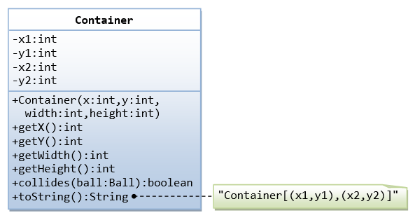
A class called Container, which represents the enclosing box for the ball, is designed as shown in the class diagram. It contains:
- Instance variables
(x1, y1)and(x2, y2)which denote the top-left and bottom-right corners of the rectangular box. - A constructor which accepts
(x, y)of the top-left corner,widthandheightas argument, and converts them into the internal representation (i.e.,x2=x1+width-1).Widthandheightis used in the argument for safer operation (there is no need to check the validity ofx2>x1etc.). - A
toString()method that returns "Container at (x1,y1) to (x2, y2)". - A
booleanmethod calledcollidesWith(Ball), which check if the givenBallis outside the bounds of the container box. If so, it invokes theBall'sreflectHorizontal()and/orreflectVertical()to change the movement direction of the ball, and returnstrue.public boolean collidesWith(Ball ball) { if (ball.getX() - ball.getRadius() <= this.x1 || ball.getX() - ball.getRadius() >= this.x2) { ball.reflectHorizontal(); return true; } ...... }
Use the following statements to test your program:
Ball ball = new Ball(50, 50, 5, 10, 30);
Container box = new Container(0, 0, 100, 100);
for (int step = 0; step < 100; ++step) {
ball.move();
box.collidesWith(ball);
System.out.println(ball); // manual check the position of the ball
}
Ex: The Ball and Player Classes
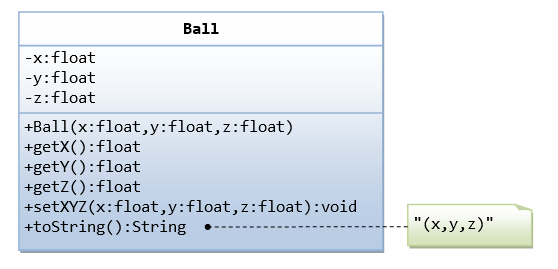The Ball class, which models the ball in a soccer game, is designed as shown in the class diagram. Write the codes for the Ball class and a test driver to test all the public methods.
The Player class, which models the players in a soccer game, is designed as shown in the class diagram. The Player interacts with the Ball (written earlier). Write the codes for the Player class and a test driver to test all the public methods. Make your assumption for the kick().
Can you write a very simple soccer game with 2 teams of players and a ball, inside a soccer field?
Exercises on Inheritance
An Introduction to OOP Inheritance by Example - The Circle and Cylinder Classes
This exercise shall guide you through the important concepts in inheritance.
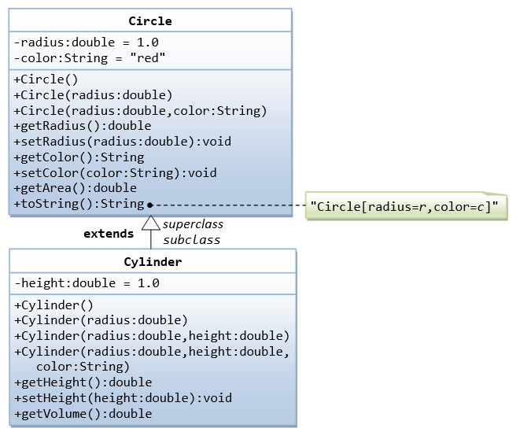In this exercise, a subclass called Cylinder is derived from the superclass Circle as shown in the class diagram (where an an arrow pointing up from the subclass to its superclass). Study how the subclass Cylinder invokes the superclass' constructors (via super() and super(radius)) and inherits the variables and methods from the superclass Circle.
You can reuse the Circle class that you have created in the previous exercise. Make sure that you keep "Circle.class" in the same directory.
public class Cylinder extends Circle { // Save as "Cylinder.java"
private double height; // private variable
// Constructor with default color, radius and height
public Cylinder() {
super(); // call superclass no-arg constructor Circle()
height = 1.0;
}
// Constructor with default radius, color but given height
public Cylinder(double height) {
super(); // call superclass no-arg constructor Circle()
this.height = height;
}
// Constructor with default color, but given radius, height
public Cylinder(double radius, double height) {
super(radius); // call superclass constructor Circle(r)
this.height = height;
}
// A public method for retrieving the height
public double getHeight() {
return height;
}
// A public method for computing the volume of cylinder
// use superclass method getArea() to get the base area
public double getVolume() {
return getArea()*height;
}
}
Write a test program (says TestCylinder) to test the Cylinder class created, as follow:
public class TestCylinder { // save as "TestCylinder.java"
public static void main (String[] args) {
// Declare and allocate a new instance of cylinder
// with default color, radius, and height
Cylinder c1 = new Cylinder();
System.out.println("Cylinder:"
+ " radius=" + c1.getRadius()
+ " height=" + c1.getHeight()
+ " base area=" + c1.getArea()
+ " volume=" + c1.getVolume());
// Declare and allocate a new instance of cylinder
// specifying height, with default color and radius
Cylinder c2 = new Cylinder(10.0);
System.out.println("Cylinder:"
+ " radius=" + c2.getRadius()
+ " height=" + c2.getHeight()
+ " base area=" + c2.getArea()
+ " volume=" + c2.getVolume());
// Declare and allocate a new instance of cylinder
// specifying radius and height, with default color
Cylinder c3 = new Cylinder(2.0, 10.0);
System.out.println("Cylinder:"
+ " radius=" + c3.getRadius()
+ " height=" + c3.getHeight()
+ " base area=" + c3.getArea()
+ " volume=" + c3.getVolume());
}
}
Method Overriding and "Super": The subclass Cylinder inherits getArea() method from its superclass Circle. Try overriding the getArea() method in the subclass Cylinder to compute the surface area (=2π×radius×height + 2×base-area) of the cylinder instead of base area. That is, if getArea() is called by a Circle instance, it returns the area. If getArea() is called by a Cylinder instance, it returns the surface area of the cylinder.
If you override the getArea() in the subclass Cylinder, the getVolume() no longer works. This is because the getVolume() uses the overridden getArea() method found in the same class. (Java runtime will search the superclass only if it cannot locate the method in this class). Fix the getVolume().
Hints: After overriding the getArea() in subclass Cylinder, you can choose to invoke the getArea() of the superclass Circle by calling super.getArea().
TRY:
Provide a toString() method to the Cylinder class, which overrides the toString() inherited from the superclass Circle, e.g.,
@Override
public String toString() { // in Cylinder class
return "Cylinder: subclass of " + super.toString() // use Circle's toString()
+ " height=" + height;
}
Try out the toString() method in TestCylinder.
Note: @Override is known as annotation (introduced in JDK 1.5), which asks compiler to check whether there is such a method in the superclass to be overridden. This helps greatly if you misspell the name of the toString(). If @Override is not used and toString() is misspelled as ToString(), it will be treated as a new method in the subclass, instead of overriding the superclass. If @Override is used, the compiler will signal an error. @Override annotation is optional, but certainly nice to have.
Ex: Superclass Person and its subclasses
Write the classes as shown in the following class diagram. Mark all the overridden methods with annotation @Override.

Ex: Point2D and Point3D
Write the classes as shown in the following class diagram. Mark all the overridden methods with annotation @Override.
Hints:
- You cannot assign floating-point literal say
1.1(which is adouble) to afloatvariable, you need to add a suffix f, e.g.0.0f,1.1f. - The instance variables
xandyareprivateinPoint2Dand cannot be accessed directly in the subclassPoint3D. You need to access via thepublicgetters and setters. For example,public void setXYZ(float x, float y, float z) { setX(x); // or super.setX(x), use setter in superclass setY(y); this.z = z; } - The method
getXY()shall return afloatarray:public float[] getXY() { float[] result = new float[2]; // construct an array of 2 elements result[0] = ... result[1] = ... return result; // return the array }
Ex: Point and MovablePoint
Write the classes as shown in the following class diagram. Mark all the overridden methods with annotation @Override.
Hints
- You cannot assign floating-point literal say
1.1(which is adouble) to afloatvariable, you need to add a suffix f, e.g.0.0f,1.1f. - The instance variables
xandyareprivateinPointand cannot be accessed directly in the subclassMovablePoint. You need to access via thepublicgetters and setters. For example, you cannot writex += xSpeed, you need to writesetX(getX() + xSpeed).
Ex: Superclass Shape and its subclasses Circle, Rectangle and Square

Write a superclass called Shape (as shown in the class diagram), which contains:
- Two instance variables
color(String) andfilled(boolean). - Two constructors: a no-arg (no-argument) constructor that initializes the
colorto "green" andfilledtotrue, and a constructor that initializes thecolorandfilledto the given values. - Getter and setter for all the instance variables. By convention, the getter for a
booleanvariablexxxis calledisXXX()(instead ofgetXxx()for all the other types). - A
toString()method that returns "A Shape with color of xxx and filled/Not filled".
Write a test program to test all the methods defined in Shape.
Write two subclasses of Shape called Circle and Rectangle, as shown in the class diagram.
The Circle class contains:
- An instance variable
radius(double). - Three constructors as shown. The no-arg constructor initializes the radius to
1.0. - Getter and setter for the instance variable
radius. - Methods
getArea()andgetPerimeter(). - Override the
toString()method inherited, to return "A Circle with radius=xxx, which is a subclass of yyy", whereyyyis the output of thetoString()method from the superclass.
The Rectangle class contains:
- Two instance variables
width(double) andlength(double). - Three constructors as shown. The no-arg constructor initializes the
widthandlengthto1.0. - Getter and setter for all the instance variables.
- Methods
getArea()andgetPerimeter(). - Override the
toString()method inherited, to return "A Rectangle with width=xxx and length=zzz, which is a subclass of yyy", whereyyyis the output of thetoString()method from the superclass.
Write a class called Square, as a subclass of Rectangle. Convince yourself that Square can be modeled as a subclass of Rectangle. Square has no instance variable, but inherits the instance variables width and length from its superclass Rectangle.
- Provide the appropriate constructors (as shown in the class diagram).
Hint:
public Square(double side) { super(side, side); // Call superclass Rectangle(double, double) } - Override the
toString()method to return "A Square with side=xxx, which is a subclass of yyy", whereyyyis the output of thetoString()method from the superclass. - Do you need to override the
getArea()andgetPerimeter()? Try them out. - Override the
setLength()andsetWidth()to change both thewidthandlength, so as to maintain the square geometry.
Ex: Superclass Animal and its subclasses
Write the codes for all the classes as shown in the class diagram.
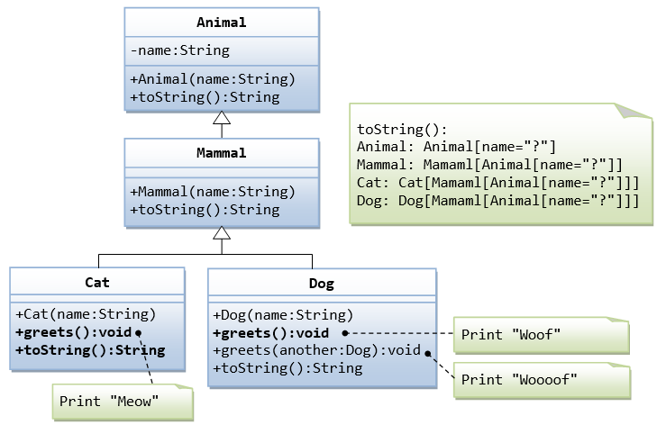Exercises on Composition vs Inheritance
They are two ways to reuse a class in your applications: composition and inheritance.
Ex: The Point and Line Classes
Let us begin with composition with the statement "a line composes of two points".
Complete the definition of the following two classes: Point and Line. The class Line composes 2 instances of class Point, representing the beginning and ending points of the line. Also write test classes for Point and Line (says TestPoint and TestLine).
public class Point {
// Private variables
private int x; // x co-ordinate
private int y; // y co-ordinate
// Constructor
public Point (int x, int y) {......}
// Public methods
public String toString() {
return "Point: (" + x + "," + y + ")";
}
public int getX() {......}
public int getY() {......}
public void setX(int x) {......}
public void setY(int y) {......}
public void setXY(int x, int y) {......}
}
public class TestPoint {
public static void main(String[] args) {
Point p1 = new Point(10, 20); // Construct a Point
System.out.println(p1);
// Try setting p1 to (100, 10).
......
}
}
public class Line {
// A line composes of two points (as instance variables)
private Point begin; // beginning point
private Point end; // ending point
// Constructors
public Line (Point begin, Point end) { // caller to construct the Points
this.begin = begin;
......
}
public Line (int beginX, int beginY, int endX, int endY) {
begin = new Point(beginX, beginY); // construct the Points here
......
}
// Public methods
public String toString() { ...... }
public Point getBegin() { ...... }
public Point getEnd() { ...... }
public void setBegin(......) { ...... }
public void setEnd(......) { ...... }
public int getBeginX() { ...... }
public int getBeginY() { ...... }
public int getEndX() { ...... }
public int getEndY() { ...... }
public void setBeginX(......) { ...... }
public void setBeginY(......) { ...... }
public void setBeginXY(......) { ...... }
public void setEndX(......) { ...... }
public void setEndY(......) { ...... }
public void setEndXY(......) { ...... }
public int getLength() { ...... } // Length of the line
// Math.sqrt(xDiff*xDiff + yDiff*yDiff)
public double getGradient() { ...... } // Gradient in radians
// Math.atan2(yDiff, xDiff)
}
public class TestLine {
public static void main(String[] args) {
Line l1 = new Line(0, 0, 3, 4);
System.out.println(l1);
Point p1 = new Point(...);
Point p2 = new Point(...);
Line l2 = new Line(p1, p2);
System.out.println(l2);
...
}
}
The class diagram for composition is as follows (where a diamond-hollow-head arrow pointing to its constituents):
Instead of composition, we can design a Line class using inheritance. Instead of "a line composes of two points", we can say that "a line is a point extended by another point", as shown in the following class diagram:
Let's re-design the Line class (called LineSub) as a subclass of class Point. LineSub inherits the starting point from its superclass Point, and adds an ending point. Complete the class definition. Write a testing class called TestLineSub to test LineSub.
public class LineSub extends Point {
// A line needs two points: begin and end.
// The begin point is inherited from its superclass Point.
// Private variables
Point end; // Ending point
// Constructors
public LineSub (int beginX, int beginY, int endX, int endY) {
super(beginX, beginY); // construct the begin Point
this.end = new Point(endX, endY); // construct the end Point
}
public LineSub (Point begin, Point end) { // caller to construct the Points
super(begin.getX(), begin.getY()); // need to reconstruct the begin Point
this.end = end;
}
// Public methods
// Inherits methods getX() and getY() from superclass Point
public String toString() { ... }
public Point getBegin() { ... }
public Point getEnd() { ... }
public void setBegin(...) { ... }
public void setEnd(...) { ... }
public int getBeginX() { ... }
public int getBeginY() { ... }
public int getEndX() { ... }
public int getEndY() { ... }
public void setBeginX(...) { ... }
public void setBeginY(...) { ... }
public void setBeginXY(...) { ... }
public void setEndX(...) { ... }
public void setEndY(...) { ... }
public void setEndXY(...) { ... }
public int getLength() { ... } // Length of the line
public double getGradient() { ... } // Gradient in radians
}
Summary: There are two approaches that you can design a line, composition or inheritance. "A line composes two points" or "A line is a point extended with another point"”. Compare the Line and LineSub designs: Line uses composition and LineSub uses inheritance. Which design is better?
Ex: The Circle and Cylinder Classes Using Composition
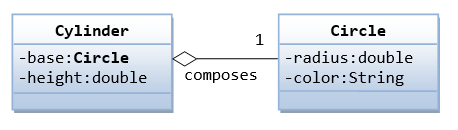Try rewriting the Circle-Cylinder of the previous exercise using composition (as shown in the class diagram) instead of inheritance. That is, "a cylinder is composed of a base circle and a height".
public class Cylinder {
private Circle base; // Base circle, an instance of Circle class
private double height;
// Constructor with default color, radius and height
public Cylinder() {
base = new Circle(); // Call the constructor to construct the Circle
height = 1.0;
}
......
}
Which design (inheritance or composition) is better?
Exercises on Polymorphism, Abstract Classes and Interfaces
Ex: Abstract Superclass Shape and Its Concrete Subclasses
Rewrite the superclass Shape and its subclasses Circle, Rectangle and Square, as shown in the class diagram.
Shape is an abstract class containing 2 abstract methods: getArea() and getPerimeter(), where its concrete subclasses must provide its implementation. All instance variables shall have protected access, i.e., accessible by its subclasses and classes in the same package. Mark all the overridden methods with annotation @Override.
In this exercise, Shape shall be defined as an abstract class, which contains:
- Two
protectedinstance variablescolor(String) andfilled(boolean). Theprotectedvariables can be accessed by its subclasses and classes in the same package. They are denoted with a'#'sign in the class diagram. - Getter and setter for all the instance variables, and
toString(). - Two
abstractmethodsgetArea()andgetPerimeter()(shown in italics in the class diagram).
The subclasses Circle and Rectangle shall override the abstract methods getArea() and getPerimeter() and provide the proper implementation. They also override the toString().
Write a test class to test these statements involving polymorphism and explain the outputs. Some statements may trigger compilation errors. Explain the errors, if any.
Shape s1 = new Circle(5.5, "red", false); // Upcast Circle to Shape
System.out.println(s1); // which version?
System.out.println(s1.getArea()); // which version?
System.out.println(s1.getPerimeter()); // which version?
System.out.println(s1.getColor());
System.out.println(s1.isFilled());
System.out.println(s1.getRadius());
Circle c1 = (Circle)s1; // Downcast back to Circle
System.out.println(c1);
System.out.println(c1.getArea());
System.out.println(c1.getPerimeter());
System.out.println(c1.getColor());
System.out.println(c1.isFilled());
System.out.println(c1.getRadius());
Shape s2 = new Shape();
Shape s3 = new Rectangle(1.0, 2.0, "red", false); // Upcast
System.out.println(s3);
System.out.println(s3.getArea());
System.out.println(s3.getPerimeter());
System.out.println(s3.getColor());
System.out.println(s3.getLength());
Rectangle r1 = (Rectangle)s3; // downcast
System.out.println(r1);
System.out.println(r1.getArea());
System.out.println(r1.getColor());
System.out.println(r1.getLength());
Shape s4 = new Square(6.6); // Upcast
System.out.println(s4);
System.out.println(s4.getArea());
System.out.println(s4.getColor());
System.out.println(s4.getSide());
// Take note that we downcast Shape s4 to Rectangle,
// which is a superclass of Square, instead of Square
Rectangle r2 = (Rectangle)s4;
System.out.println(r2);
System.out.println(r2.getArea());
System.out.println(r2.getColor());
System.out.println(r2.getSide());
System.out.println(r2.getLength());
// Downcast Rectangle r2 to Square
Square sq1 = (Square)r2;
System.out.println(sq1);
System.out.println(sq1.getArea());
System.out.println(sq1.getColor());
System.out.println(sq1.getSide());
System.out.println(sq1.getLength());
What is the usage of the abstract method and abstract class?
Ex: GeometricObject Interface and its Implementation Classes Circle and Rectangle
Write an interface called GeometricObject, which contains 2 abstract methods: getArea() and getPerimeter(), as shown in the class diagram. Also write an implementation class called Circle. Mark all the overridden methods with annotation @Override.
Ex: Movable Interface and its Implementation MovablePoint Class
Write an interface called Moveable, which contains 4 abstract methods moveUp(), moveDown(), moveLeft() and moveRight(), as shown in the class diagram. Also write an implementation class called MovablePoint. Mark all the overridden methods with annotation @Override.
Ex: Movable Interface and its Implementation Classes MovablePoint and MovableCircle
Write an interface called Moveable, which contains 4 abstract methods moveUp(), moveDown(), moveLeft() and moveRight(), as shown in the class diagram. Also write the implementation classes called MovablePoint and MovableCircle. Mark all the overridden methods with annotation @Override.
Ex: Interfaces Resizable and GeometricObject
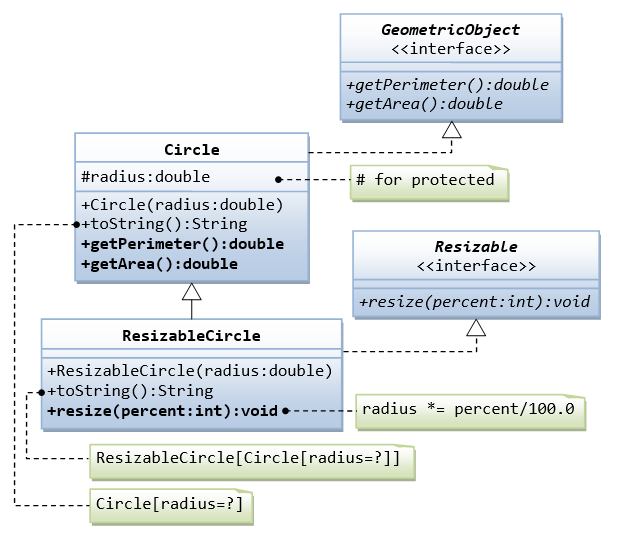- Write the
interfacecalledGeometricObject, which declares twoabstractmethods:getParameter()andgetArea(), as specified in the class diagram.
Hints:public interface GeometricObject { public double getPerimeter(); ...... } - Write the implementation class
Circle, with a protected variableradius, which implements the interfaceGeometricObject.
Hints:public class Circle implements GeometricObject { // Private variable ...... // Constructor ...... // Implement methods defined in the interface GeometricObject @Override public double getPerimeter() { ...... } ...... } - Write a test program called
TestCircleto test the methods defined inCircle. - The class
ResizableCircleis defined as a subclass of the classCircle, which also implements an interface calledResizable, as shown in class diagram. The interfaceResizabledeclares anabstractmethodresize(), which modifies the dimension (such asradius) by the given percentage. Write the interfaceResizableand the classResizableCircle.
Hints:public interface
Resizable{ public double resize(...); }public class
ResizableCircleextends Circle implements Resizable { // Constructor public ResizableCircle(double radius) { super(...); } // Implement methods defined in the interface Resizable @Override public double resize(int percent) { ...... } } - Write a test program called
TestResizableCircleto test the methods defined inResizableCircle.
Ex: Abstract Superclass Animal and its Implementation Subclasses
Write the codes for all the classes shown in the class diagram. Mark all the overridden methods with annotation @Override.
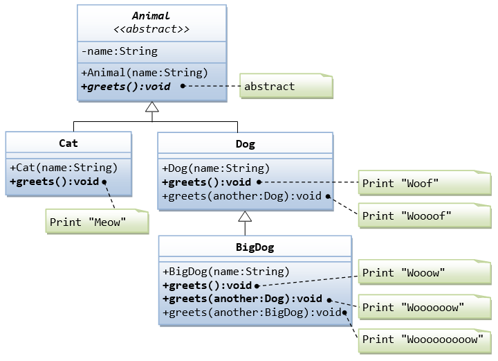Ex: Another View of Abstract Superclass Animal and its Implementation Subclasses
Examine the following codes and draw the class diagram.
abstract public class Animal {
abstract public void greeting();
}
public class Cat extends Animal {
@Override
public void greeting() {
System.out.println("Meow!");
}
}
public class Dog extends Animal {
@Override
public void greeting() {
System.out.println("Woof!");
}
public void greeting(Dog another) {
System.out.println("Woooooooooof!");
}
}
public class BigDog extends Dog {
@Override
public void greeting() {
System.out.println("Woow!");
}
@Override
public void greeting(Dog another) {
System.out.println("Woooooowwwww!");
}
}
Explain the outputs (or error) for the following test program.
public class TestAnimal {
public static void main(String[] args) {
// Using the subclasses
Cat cat1 = new Cat();
cat1.greeting();
Dog dog1 = new Dog();
dog1.greeting();
BigDog bigDog1 = new BigDog();
bigDog1.greeting();
// Using Polymorphism
Animal animal1 = new Cat();
animal1.greeting();
Animal animal2 = new Dog();
animal2.greeting();
Animal animal3 = new BigDog();
animal3.greeting();
Animal animal4 = new Animal();
// Downcast
Dog dog2 = (Dog)animal2;
BigDog bigDog2 = (BigDog)animal3;
Dog dog3 = (Dog)animal3;
Cat cat2 = (Cat)animal2;
dog2.greeting(dog3);
dog3.greeting(dog2);
dog2.greeting(bigDog2);
bigDog2.greeting(dog2);
bigDog2.greeting(bigDog1);
}
}
Ex: Interface Movable and its implementation subclasses MovablePoint and MovableCircle
Suppose that we have a set of objects with some common behaviors: they could move up, down, left or right. The exact behaviors (such as how to move and how far to move) depend on the objects themselves. One common way to model these common behaviors is to define an interface called Movable, with abstract methods moveUp(), moveDown(), moveLeft() and moveRight(). The classes that implement the Movable interface will provide actual implementation to these abstract methods.
Let's write two concrete classes - MovablePoint and MovableCircle - that implement the Movable interface.

The code for the interface Movable is straight forward.
public interface Movable { // saved as "Movable.java"
public void moveUp();
......
}
For the MovablePoint class, declare the instance variable x, y, xSpeed and ySpeed with package access as shown with '~' in the class diagram (i.e., classes in the same package can access these variables directly). For the MovableCircle class, use a MovablePoint to represent its center (which contains four variable x, y, xSpeed and ySpeed). In other words, the MovableCircle composes a MovablePoint, and its radius.
public class MovablePoint implements Movable { // saved as "MovablePoint.java"
// instance variables
int x, y, xSpeed, ySpeed; // package access
// Constructor
public MovablePoint(int x, int y, int xSpeed, int ySpeed) {
this.x = x;
......
}
......
// Implement abstract methods declared in the interface Movable
@Override
public void moveUp() {
y -= ySpeed; // y-axis pointing down for 2D graphics
}
......
}
public class MovableCircle implements Movable { // saved as "MovableCircle.java"
// instance variables
private MovablePoint center; // can use center.x, center.y directly
// because they are package accessible
private int radius;
// Constructor
public MovableCircle(int x, int y, int xSpeed, int ySpeed, int radius) {
// Call the MovablePoint's constructor to allocate the center instance.
center = new MovablePoint(x, y, xSpeed, ySpeed);
......
}
......
// Implement abstract methods declared in the interface Movable
@Override
public void moveUp() {
center.y -= center.ySpeed;
}
......
}
Write a test program and try out these statements:
Movable m1 = new MovablePoint(5, 6, 10, 15); // upcast System.out.println(m1); m1.moveLeft(); System.out.println(m1); Movable m2 = new MovableCircle(1, 2, 3, 4, 20); // upcast System.out.println(m2); m2.moveRight(); System.out.println(m2);
Write a new class called MovableRectangle, which composes two MovablePoints (representing the top-left and bottom-right corners) and implementing the Movable Interface. Make sure that the two points has the same speed.

What is the difference between an interface and an abstract class?
More Exercises on OOP
Ex: The Discount System
You are asked to write a discount system for a beauty saloon, which provides services and sells beauty products. It offers 3 types of memberships: Premium, Gold and Silver. Premium, gold and silver members receive a discount of 20%, 15%, and 10%, respectively, for all services provided. Customers without membership receive no discount. All members receives a flat 10% discount on products purchased (this might change in future). Your system shall consist of three classes: Customer, Discount and Visit, as shown in the class diagram. It shall compute the total bill if a customer purchases $x of products and $y of services, for a visit. Also write a test program to exercise all the classes.
The class DiscountRate contains only static variables and methods (underlined in the class diagram).
Ex: Polyline of Points with ArrayList
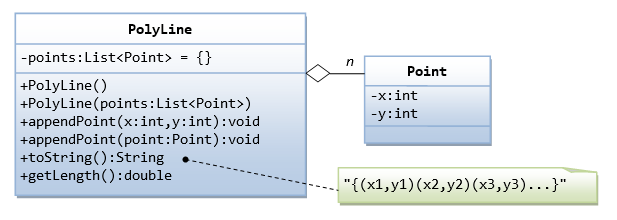A polyline is a line with segments formed by points. Let's use the ArrayList (dynamically allocated array) to keep the points, but upcast to List in the instance variable. (Take note that array is of fixed-length, and you need to set the initial length).
public class Point {
private int x;
private int y;
public Point(int x, int y) { ...... }
public int getX() { ...... }
public int getY() { ...... }
public void setX(int x) { ...... }
public void setY(int y) { ...... }
public int[] getXY() { ...... }
public void setXY(int x, int y) { ...... }
public String toString() { ...... }
public double distance(Point another) { ...... }
}
import java.util.*;
public class PolyLine {
private List<Point> points; // List of Point instances
// Constructors
public PolyLine() { // default constructor
points = new ArrayList<Point>(); // implement with ArrayList
}
public PolyLine(List<Point> points) {
this.points = points;
}
// Append a point (x, y) to the end of this polyline
public void appendPoint(int x, int y) {
Point newPoint = new Point(x, y);
points.add(newPoint);
}
// Append a point instance to the end of this polyline
public void appendPoint(Point point) {
points.add(point);
}
// Return {(x1,y1)(x2,y2)(x3,y3)....}
public String toString() {
// Use a StringBuilder to efficiently build the return String
StringBuilder sb = new StringBuilder("{");
for (Point aPoint : points) {
sb.append(aPoint.toString());
}
sb.append("}");
return sb.toString();
}
// Return the total length of this polyline
public double getLength() { ...... }
}
/* * A Test Driver for the PolyLine class. */ import java.util.*; public class TestPolyLine { public static void main(String[] args) { // Test default constructor and toString() PolyLine l1 = new PolyLine(); System.out.println(l1); // {} // Test appendPoint() l1.appendPoint(new Point(1, 2)); l1.appendPoint(3, 4); l1.appendPoint(5, 6); System.out.println(l1); // {(1,2)(3,4)(5,6)} // Test constructor 2 List<Point> points = new ArrayList<Point>(); points.add(new Point(11, 12)); points.add(new Point(13, 14)); PolyLine l2 = new PolyLine(points); System.out.println(l2); // {(11,12)(13,14)} } }
Exercises on Data Structures
Ex: MyIntStack
A stack is a first-in-last-out queue. Write a program called MyIntStack, which uses an array to store the contents, restricted to int.

Write a test program.
1 2 3 4 5 6 7 8 9 10 11 12 13 14 15 16 17 18 19 20 21 22 23 24 25 26 27 28 29 30 |
public class MyIntStack {
private int[] contents;
private int tos; // Top of the stack
// constructors
public MyIntStack(int capacity) {
contents = new int[capacity];
tos = -1;
}
public void push(int element) {
contents[++tos] = element;
}
public int pop() {
return contents[tos--];
}
public int peek() {
return contents[tos];
}
public boolean isEmpty() {
return tos < 0;
}
public boolean isFull() {
return tos == contents.length - 1;
}
}
|
Try:
- Modify the
push()method to throw anIllegalStateExceptionif the stack is full. - Modify the
push()to returntrueif the operation is successful, orfalseotherwise. - Modify the
push()to increase the capacity by reallocating another array, if the stack is full.
Exercise (Nodes, Link Lists, Trees, Graphs):
[TODO]
- Study the existing open source codes, including JDK.
- Specialized algorithms, such as shortest path.
Exercise (Maps):
[TODO]
- Representation of map data.
- Specialized algorithms, such as shortest path.
Exercise (Matrix Operations for 3D Graphics):
[TODO]
- Study the existing open source codes, including JDK's 2D Graphics and JOGL's 3D Graphics.
- Efficient and specialized codes for 3D Graphics (4D matrices). Handle various primitive types such as
int,floatanddoubleefficiently.